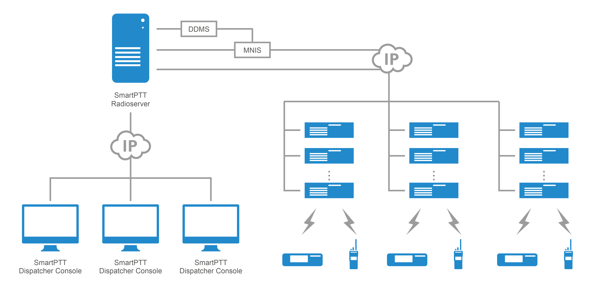

Componentes
Um sistema de informação é composto por cinco componentes principais: hardware, software, banco de dados, rede e conectividade. Cada um desses componentes desempenha um papel fundamental na criação de um sistema de informação eficaz, e são interdependentes, devendo ser considerados em conjunto durante o desenvolvimento do sistema.
-
Hardware
-
Software
-
Rede
-
Banco de dados
-
Conectividade
Característica
Hardware
Refere-se aos dispositivos físicos que compõem o sistema, como computadores, servidores, impressoras, scanners, roteadores, switches, etc.
Software
Inclui os programas, aplicativos e sistemas operacionais que são executados no hardware para realizar as tarefas desejadas. Exemplos de software incluem programas de processamento de texto, planilhas, editores de imagem, softwares de gerenciamento de banco de dados, etc.
Conectividade
É a capacidade dos dispositivos se comunicarem uns com os outros e com a internet. Isso pode incluir tecnologias como Wi-Fi, Bluetooth, NFC e outras.
Banco de dados
É onde as informações são armazenadas e gerenciadas. Os bancos de dados podem ser organizados de diversas maneiras, como por exemplo, relacional, orientado a objetos ou em nuvem.
Rede
Refere-se à infraestrutura de comunicação que permite a transferência de informações entre dispositivos. As redes podem ser cabeadas ou sem fio e podem ser usadas para conectar dispositivos em um único local ou em vários locais geográficos diferentes.
Estudo de Caso
Um exemplo de um sistema de informação que utiliza esses componentes é um sistema de gerenciamento de comunicações de rádio bidirecionais usado em ambientes empresariais e governamentais.
O hardware utilizado inclui o rádio bidirecional, que é o dispositivo de comunicação usados pelos usuários, além de um computador ou servidor que executa o software SmartPTT. Também pode ser necessário outros dispositivos, como consoles de despacho e gateways de rádio, que ajudam a conectar os rádios e o sistema de gerenciamento.
O software SmartPTT é o sistema de gerenciamento que permite que os usuários se comuniquem por rádio e controla a comunicação em toda a rede. O software também oferece recursos de despacho, como chamadas seletivas, chamadas de grupo e chamadas de emergência, além de permitir o rastreamento da localização dos rádios em tempo real.
O banco de dados é usado para armazenar informações sobre os usuários, grupos de usuários, configurações de rádio e histórico de chamadas. Isso permite que o sistema de gerenciamento mantenha um registro preciso de quem está se comunicando, quando e onde.
A rede é usada para conectar os dispositivos que compõem o sistema SmartPTT, como os rádios bidirecionais, o computador ou servidor e outros dispositivos, como consoles de despacho e gateways de rádio. Essa rede permite que o sistema SmartPTT funcione como um sistema integrado e permite a comunicação entre os usuários.
A conectividade é usada para conectar à rede SmartPTT a outras redes, como a internet, permitindo que os usuários se comuniquem com outros usuários em diferentes locais. Além disso, a conectividade também permite que o sistema SmartPTT se integre a outros sistemas, como sistemas de rastreamento de veículos e sistemas de segurança.
Conclusão
Em conjunto, esses componentes formam um sistema de informação completo e eficiente para gerenciar a comunicação por rádio bidirecional em ambientes empresariais e governamentais. O SmartPTT utiliza hardware, software, banco de dados, rede e conectividade para fornecer uma solução completa de comunicação e gerenciamento de rádio para seus usuários.
Uma empresa de varejo precisa monitorar suas vendas em tempo real para garantir que seus estoques estejam atualizados e os clientes estejam recebendo produtos de qualidade. A empresa tem várias lojas em todo o país, cada uma com seu próprio conjunto de sistemas de vendas. A empresa precisa consolidar esses dados em um único local para análise e tomada de decisões.
Hardware: Cada loja da empresa usa computadores de varejo (PDVs) para processar as vendas. A empresa também tem servidores em seu centro de dados para hospedar o banco de dados e o software PowerBI.
Rede: A empresa usa uma rede privada virtual (VPN) para conectar todas as suas lojas ao centro de dados. Isso garante que os dados sejam transferidos com segurança e rapidez para o banco de dados central.
Software: A empresa usa um sistema de gerenciamento de vendas para processar as vendas em cada loja. O sistema é integrado ao software PowerBI, que é usado para criar painéis e relatórios de vendas em tempo real. O software PowerBI é instalado nos servidores do centro de dados e é acessível a partir de qualquer dispositivo com uma conexão à Internet.
Conectividade: Para permitir que as lojas se conectem ao banco de dados central, a empresa usa uma conexão de internet de alta velocidade. Isso garante que os dados sejam transferidos rapidamente e que os painéis e relatórios sejam atualizados em tempo real.
Banco de dados: A empresa usa um banco de dados central para armazenar todas as vendas de todas as lojas em todo o país. O banco de dados é projetado para ser escalável e tolerante a falhas, garantindo que as informações estejam sempre disponíveis.
Conclusão
Usando o PowerBI, a empresa pode criar painéis e relatórios personalizados para cada loja, permitindo que os gerentes vejam as informações de vendas em tempo real e tomem decisões informadas sobre o estoque e o gerenciamento de inventário. O PowerBI também permite que a empresa analise tendências e padrões de vendas ao longo do tempo, permitindo que os gerentes tomem decisões estratégicas informadas sobre a alocação de recursos de vendas e a expansão do negócio.
A gestão de informações em um sistema hospitalar é extremamente importante para garantir a qualidade do atendimento ao paciente e melhorar a eficiência dos serviços prestados. Um sistema bem projetado e implementado pode ajudar a centralizar as informações de pacientes, permitindo que médicos, enfermeiros, farmacêuticos e outros profissionais de saúde possam acessá-las facilmente e tomar decisões informadas em tempo hábil. Neste estudo de caso, descreveremos como os cinco componentes de informação (hardware, rede, software, conectividade e banco de dados) são utilizados em um sistema hospitalar para melhorar a eficiência operacional e a qualidade do atendimento ao paciente.
Hardware: O sistema hospitalar usa computadores desktops, laptops, tablets e smartphones para acessar e gerenciar informações dos pacientes. Além disso, existem equipamentos médicos, como monitores de frequência cardíaca, aparelhos de raios-X, ultrassom e ressonância magnética, que também estão conectados à rede para envio de dados.
Rede: O sistema hospitalar usa uma rede local (LAN) para interconectar todos os dispositivos em um mesmo prédio. Além disso, é utilizado um link de alta velocidade com a internet para interconectar todos os prédios da rede hospitalar.
Software: O sistema hospitalar usa um software de gestão hospitalar (Hospital Management System) que inclui uma variedade de módulos, como admissão de pacientes, prescrição de medicamentos, agendamento de consultas, laboratórios, gerenciamento de pacientes internados, gerenciamento de estoque de medicamentos, entre outros. O software é personalizado para atender às necessidades específicas do hospital e é usado por médicos, enfermeiros, farmacêuticos e outros funcionários do hospital.
Conectividade: O sistema hospitalar utiliza uma infraestrutura de rede bem projetada para garantir a conectividade entre todos os dispositivos do hospital e entre os diferentes prédios da rede hospitalar. Além disso, a rede é protegida por medidas de segurança como firewalls, antivírus e autenticação de usuários para proteger a privacidade dos pacientes.
Banco de dados: O sistema hospitalar utiliza um banco de dados centralizado para armazenar informações dos pacientes, como seus dados pessoais, informações médicas, resultados de exames, histórico de medicação, entre outros. O banco de dados é projetado para ser escalável e tolerante a falhas para garantir que as informações estejam sempre disponíveis para os usuários autorizados.
Conclusão
Usando o sistema hospitalar, os médicos podem acessar facilmente o histórico médico dos pacientes, prescrever medicamentos, fazer pedidos de exames, agendar consultas e gerenciar a internação de pacientes. Os enfermeiros podem acessar as informações dos pacientes e gerenciar suas tarefas diárias, como administrar medicamentos, monitorar sinais vitais, entre outros. O sistema também permite que os farmacêuticos gerenciem o estoque de medicamentos e monitorar as prescrições médicas. Além disso, o sistema hospitalar permite que os administradores do hospital monitorem o desempenho geral do hospital, como o tempo médio de espera, a taxa de ocupação e a utilização de recursos.
Conclusão
Em resumo, os componentes de um sistema de informação são essenciais para o funcionamento de qualquer empresa ou organização. Cada componente desempenha um papel fundamental na criação de um sistema de informação eficaz e bem-sucedido. Ao considerar e projetar cada componente adequadamente, é possível criar um sistema de informação que seja eficiente, seguro e capaz de atender às necessidades dos usuários.
Cada um desses componentes é importante para garantir que o sistema de informação funcione de maneira eficiente e confiável. O hardware é responsável por fornecer a capacidade de processamento e armazenamento, enquanto o software é responsável por fornecer a funcionalidade do sistema. O banco de dados é responsável por armazenar informações, enquanto a rede e a conectividade permitem que os dispositivos se comuniquem e compartilhem informações.
Exemplos de sistemas de informação, como gestão de informações em um sistema hospitalar, o sistema de gerenciamento de estoque em um comércio varejista e o sistema de gerenciamento de comunicações de rádio bidirecionais no SmartPTT, demonstram como esses componentes são usados em conjunto para criar sistemas eficientes e integrados que atendem às necessidades dos usuários.
Em conclusão, os sistemas de informação são fundamentais em muitos setores, incluindo comércio, indústria, saúde e governo, e os componentes que compõem esses sistemas são críticos para o sucesso do sistema. A constante evolução da tecnologia e o aumento da complexidade dos sistemas de informação continuam a exigir soluções cada vez mais sofisticadas para garantir que as informações sejam coletadas, processadas, armazenadas e distribuídas de maneira eficiente e segura.